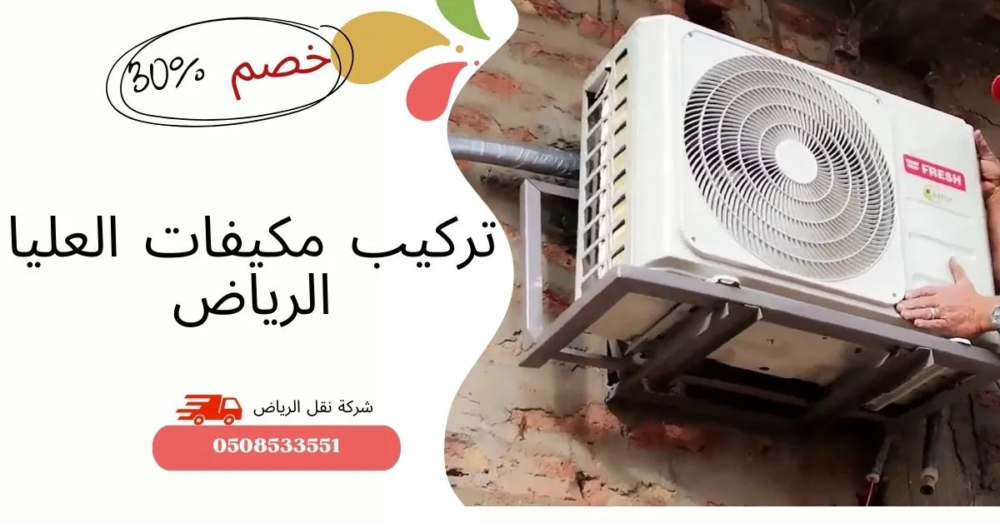

تركيب مكيفات العليا الرياض

تعد شركات تركيب المكيفات من العناصر الأساسية في توفير بيئة مريحة في المنازل والمكاتب، وخاصة مع ارتفاع درجات الحرارة في العديد من المناطق، ويتطلب تركيب مكيفات بكفاءة وجودة خبرة عالية وفنيين متخصصين للتأكد من أن التكييف يعمل بكفاءة طويلة المدى، وفي هذا المقال سوف نتناول العديد من النقاط التي يجب أن تأخذها في اعتبارك عند اختيار شركة لتركيب المكيفات، وأهم العوامل التي تؤثر في عملية التركيب، كما سنتعرف على بعض النصائح التي يجب اتباعها لتجنب أي مشكلات قد تواجهك في المستقبل، وتعد شركة تركيب مكيفات العليا الرياض من الشركات الرائدة في هذا المجال وتتميز بتقديم خدمات تركيب وصيانة على أعلى مستوى.
شركات تركيب تكييف
تعتبر شركات تنظيف مكيفات من العناصر الأساسية في توفير بيئة مريحة في المنازل والمكاتب، ويتطلب تركيب مكيفات العليا الرياض خبرة وكفاءة لضمان الأداء المثالي للتكييف، وفي هذا السياق تبرز أهمية اختيار الشركة المناسبة لضمان جودة الخدمة واحترافية التركيب، وإليك بعض النقاط المهمة حول شركات تركيب التكييف:
التجربة والكفاءة
يجب أن تكون الشركة لديها تاريخ حافل في تقديم خدمات تركيب التكييف، ومن الضروري التأكد من أن لديها خبرة في التعامل مع أنواع متعددة من المكيفات مثل المكيفات الشباكية والمركزي.
تقييم العملاء
من المهم قراءة تقييمات العملاء السابقين لضمان جودة الخدمة، ويمكن الاطلاع على المراجعات عبر الإنترنت ومنصات التواصل الاجتماعي، حيث تعكس آراء العملاء تجاربهم المباشرة مع الشركة.
تقديم ضمانات
الشركات الجيدة تقدم ضمانات على خدماتها مما يعطي العملاء شعوراً بالأمان والثقة، وتأكد من قراءة شروط الضمان وفهم ما يغطيه.
الأسعار التنافسية
من الضروري مقارنة الأسعار بين الشركات المختلفة للحصول على أفضل عرض، واحرص على أن تتضمن الأسعار خدمات التركيب والصيانة وأي تكاليف إضافية محتملة.
خدمة ما بعد البيع
توفر الشركات خدمة دعم فني مستمرة بعد التركيب، حيث يمكن للعملاء الحصول على مساعدة في حال حدوث أي مشاكل أو استفسارات.
التراخيص والشهادات
تأكد من أن الشركة مرخصة ولديها الشهادات اللازمة، وتتبع الشركات المعتمدة معايير الجودة وتلتزم باللوائح المحلية.
الاستجابة السريعة
يجب أن تكون الشركة قادرة على الاستجابة السريعة لطلبات العملاء، خاصة في حالات الطوارئ حيث تكون هناك حاجة ملحة لتركيب أو صيانة المكيفات.
شركات تركيب تكييف مركزي
يعتبر التكييف المركزي خياراً شائعاً في الأماكن الكبيرة مثل المكاتب والمراكز التجارية، ووبفضل كفاءته العالية وقدرته على توزيع الهواء بشكل متساوٍ في جميع أرجاء المكان، ويفضل العديد من العملاء هذا النوع من التكييف، ويتضمن تركيب مكيفات العليا الرياض العديد من العوامل التي يجب أخذها في الاعتبار، وإليك بعض النقاط المهمة:
دراسة المكان
يجب على الشركة القيام بدراسة شاملة للمكان لتحديد النظام الأنسب، ويشمل ذلك قياس المساحات وتحديد عدد الوحدات المطلوبة.
التخطيط السليم
ضرورة التخطيط الجيد لنظام التكييف المركزي لتجنب أي مشكلات مستقبلية، ويجب أن يتضمن التخطيط تفاصيل حول الأنبوب والتوصيلات الكهربائية.
اختيار المعدات
يجب اختيار المكيفات المناسبة وفقاً لمتطلبات المكان، بما في ذلك القدرة الحصانية ونوع الفلتر المستخدم.
التكلفة الإجمالية
يجب على العميل معرفة التكاليف الكاملة بما في ذلك التركيب والصيانة، ومن المهم الحصول على تقديرات مكتوبة لتجنب أي مفاجآت مالية.
الصيانة الدورية
أهمية إجراء صيانة دورية لضمان كفاءة النظام، ويجب أن تتضمن الصيانة تنظيف الفلاتر وفحص الأنابيب.
التحكم الذكي
الاستفادة من أنظمة التحكم الذكي لزيادة الكفاءة وتقليل استهلاك الطاقة، كما يمكن للعملاء التحكم في درجات الحرارة من هواتفهم الذكية.
تقييم الأداء
بعد التركيب يجب أن يتم تقييم أداء النظام من قبل الشركة للتأكد من أنه يعمل بكفاءة.
شركة تركيب مكيفات العليا الرياض
تعتبر شركة تركيب مكيفات العليا الرياض من الشركات الرائدة في هذا المجال، وتقدم الشركة مجموعة شاملة من الخدمات التي تلبي احتياجات العملاء في تركيب وصيانة المكيفات، وإليك بعض الميزات التي تجعل الشركة مميزة:
- فريق عمل محترف: يتكون من فنيين ذوي خبرة وكفاءة عالية، ويتم تدريبهم بانتظام على أحدث التقنيات في تركيب وصيانة المكيفات.
- تنوع الخدمات: تشمل تركيب وصيانة وتنظيف المكيفات، وتقدم الشركة أيضًا خدمات استشارية لمساعدة العملاء في اتخاذ القرارات الصحيحة.
- استخدام أحدث التقنيات: لضمان جودة التركيب وكفاءة الأداء، وتستخدم الشركة أدوات متطورة لتقليل وقت التركيب وزيادة الدقة.
- تقديم الاستشارات: لمساعدة العملاء في اختيار الأنظمة الأنسب، كما يشمل ذلك تقييم حجم المكان ومتطلبات التبريد.
- سعر تنافسي: تقدم الشركة أسعاراً مناسبة لجميع العملاء مع خيارات تمويل مريحة.
- التزام بالمواعيد: تحرص الشركة على الالتزام بالمواعيد المحددة لتقديم الخدمة مما يعكس احترافيتها واحترامها لوقت العملاء.
- الاستجابة السريعة: توفر الشركة خدمات طوارئ في حال حدوث أعطال غير متوقعة مما يضمن راحة العملاء.
نصائح قبل تركيب التكييف
قبل اتخاذ قرار تركيب التكييف هناك العديد من النصائح التي يجب مراعاتها لضمان الحصول على أفضل تجربة ممكنة، ويتطلب تركيب مكيفات العليا الرياض بعض التحضيرات المهمة، وإليك بعض النصائح المفيدة:
- تحديد الاحتياجات: يجب على العميل تحديد متطلبات التكييف بناءً على حجم المكان، ويشمل ذلك التفكير في عدد الغرف ومستوى العزل الحراري.
- اختيار النوع المناسب: سواء كان تكييف مركزي أو تكييف سبليت، يجب الاختيار وفقاً للاحتياجات، وقد يكون التكييف المركزي أكثر كفاءة للمساحات الكبيرة.
- البحث عن الشركات: قم بالبحث والمقارنة بين الشركات المتاحة في السوق، وابحث عن الشركات التي تقدم خدمات شاملة بما في ذلك التركيب والصيانة.
- التحقق من التراخيص: تأكد من أن الشركة مرخصة ولديها تصاريح العمل اللازمة، وهذا يضمن أن الشركة تتبع المعايير المهنية.
- فهم شروط الضمان: من المهم معرفة تفاصيل الضمان والخدمات المقدمة بعد التركيب، وتأكد من معرفة المدة وما يغطيه الضمان.
- اختيار الموقع المناسب: يجب تحديد المكان المثالي لتركيب الوحدة الداخلية والخارجية، ويجب أن تكون الوحدات الخارجية في موقع جيد للتخلص من الحرارة.
- الاستعداد للتكاليف الإضافية: تأكد من معرفة جميع التكاليف المحتملة، بما في ذلك تكاليف التركيب والصيانة المستقبلية.
شركة غسيل مكيفات بالرياض
تركيب مكيفات العليا الرياض أمر لا بد منه للحفاظ على كفاءة الأداء، وتوفر شركة غسيل مكيفات بالرياض خدمات متكاملة تضمن لك هواءً نظيفاً وصحياً، وإليك بعض النقاط التي توضح أهمية هذه الخدمات:
| تحسين جودة الهواء | تنظيف المكيفات يساعد في تحسين جودة الهواء داخل المنزل، ويمكن أن يؤدي تراكم الأتربة إلى مشاكل صحية وخاصة للأشخاص الذين يعانون من الحساسية. |
| زيادة كفاءة المكيف | من خلال إزالة الأتربة والشوائب التي تعيق الأداء، وتعمل مكيفات نظيفة تعمل بكفاءة أعلى وتساعد في تقليل استهلاك الطاقة. |
| تقليل استهلاك الطاقة | مكيفات نظيفة تعمل بكفاءة أعلى وتستهلك طاقة أقل مما يعني فواتير كهرباء أقل. |
| إطالة عمر الجهاز | الصيانة الدورية تساعد في إطالة عمر المكيف مما يوفر تكاليف الاستبدال. |
| تجنب الأعطال | الكشف المبكر عن الأعطال المحتملة يقلل من تكاليف الإصلاح، ويمكن أن تساعد الصيانة الدورية في تحديد المشكلات قبل أن تصبح كبيرة. |
| توفير بيئة صحية | يساهم في توفير بيئة صحية وخالية من الجراثيم مما يحسن نوعية الحياة بشكل عام. |
| اختيار مواد التنظيف المناسبة | يجب أن تستخدم الشركة مواد تنظيف آمنة وفعالة لضمان عدم تلف المكيف. |
خدمات شركة نقل الرياض
تقدم شركة نقل الرياض مجموعة متنوعة من الخدمات التي تشمل تركيب مكيفات العليا الرياض، وإن التركيز على الجودة والاحترافية يجعلها الخيار الأمثل للعملاء، وإليك بعض الخدمات التي تقدمها الشركة:
- تركيب مكيفات: توفير خدمات تركيب مكيفات بجودة عالية، مع التركيز على التفاصيل لضمان الأداء الأمثل.
- صيانة دورية: تقديم خدمات الصيانة الدورية للمكيفات، مع جداول زمنية مرنة تناسب احتياجات العملاء.
- تنظيف المكيفات: خدمات تنظيف شاملة للحفاظ على كفاءة الأجهزة، بما في ذلك تنظيف الفلاتر والمراوح.
- استشارات فنية: تقديم استشارات فنية لمساعدة العملاء في اختيار الأنظمة المناسبة مع مراعاة الميزانية والمتطلبات.
- خدمات الطوارئ: توفر الشركة خدمات الطوارئ للإصلاح في حالة الأعطال المفاجئة مما يضمن راحة البال للعملاء.
- رضا العملاء: تضع الشركة رضا العملاء في مقدمة أولوياتها مما يعزز سمعتها في السوق ويجعلها الخيار الأول للكثيرين.
- تدريب العملاء: تقدم الشركة تدريباً للعملاء على كيفية استخدام المكيفات بشكل صحيح وهذا يساعد في الحفاظ على كفاءتها.
الأسئلة الشائعة حول تركيب مكيفات العليا الرياض
ما هي أهمية اختيار شركة محترفة لتركيب المكيفات؟
اختيار شركة محترفة يضمن لك تركيب المكيف بشكل صحيح، مما يزيد من كفاءته ويطيل عمره.
هل يجب أن أختار المكيفات حسب حجم المكان؟
نعم اختيار المكيف المناسب لحجم المكان ضروري لضمان توزيع الهواء بشكل متساوٍ وتحقيق أفضل أداء.
كم من الوقت يستغرق تركيب المكيف؟
يعتمد وقت التركيب على نوع المكيف وحجم المكان لكنه عادة يستغرق من عدة ساعات إلى يوم كامل.
هل تقدم الشركات ضمانات على خدمات تركيب المكيفات؟
نم العديد من الشركات تقدم ضمانات على خدماتها للتأكد من رضا العملاء وجودة التركيب.